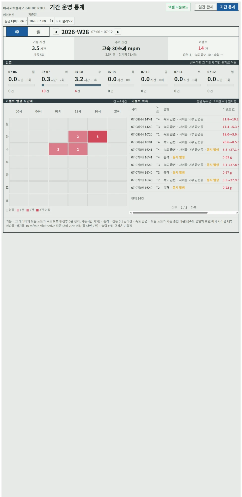
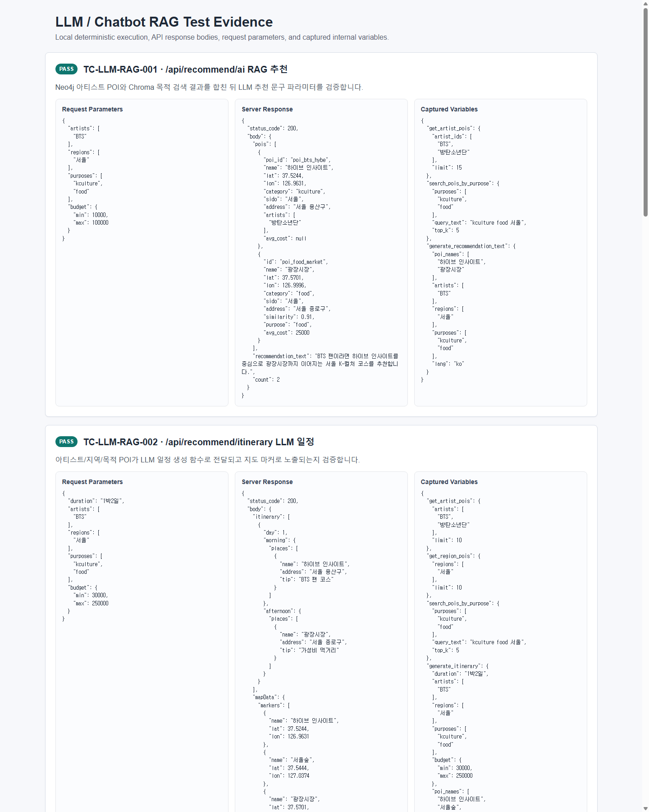
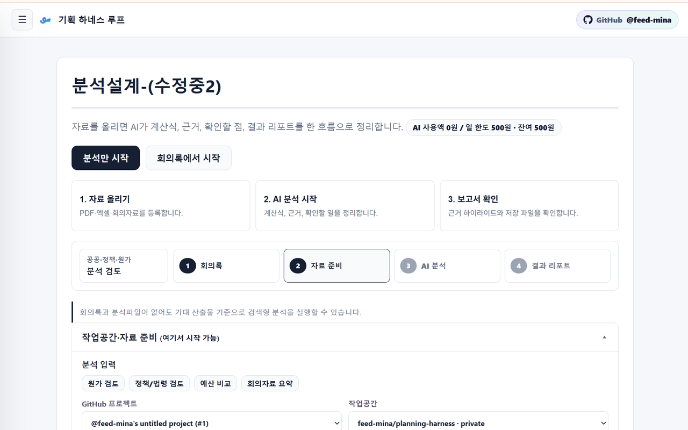

01 / Projects
Featured Projects.
직접 만들고 고친 것 세 가지. 카드마다 무엇이 문제였고 무엇이 달라졌는지 적었습니다.

01 · 제조 센서 데이터
가동 0회인데 1.2시간
문제 한 주 통계에 가동 1.2시간과 가동 0회가 같이 떴다. 횟수와 시간이 다른 기준으로 세고 있었다.
결과 "가동 1회"를 현장과 다시 정하고 합산 함수 한 곳으로 통일. 36일치 화면 전부를 대조해 두 숫자가 맞는지 확인.
36일치 화면 전부 일치 · 18.0초 → 0.89초

02 · RAG 검색
검색 점수 하나로 답하지 않는다
문제 "경기도 촬영지"를 물었는데 서울 장소가 섞이거나, 실제로 없는 장소가 답에 들어갔다.
결과 질문과 충분히 비슷한 장소만 답에 쓰고, "서울" 같은 지역 조건은 점수와 상관없이 따로 거릅니다. 근거가 되는 장소를 못 찾으면 못 찾았다고 화면에 표시합니다.
비슷함 기준 0.25 · 후보 3개 · 근거 없으면 표시

03 · AI 기획 루프
AI가 마음대로 반영하지 못하게
문제 기획 산출물이 프롬프트마다 달라지고, 이슈로 넘기는 사이 맥락이 사라졌다.
결과 스킬 8개로 흐름을 고정하고, GitHub에 쓰는 작업은 dry-run과 사람 승인을 거친다.
스킬 8개 · 승인 전 외부 작업 0건
전체 프로젝트 6개 더 보기
02 / Platform
엔진 → 편집기 → 기획 루프.
세 제품은 "화면을 코드가 아니라 데이터로 다룬다"는 한 가지 규칙을 같이 씁니다. 셋 다 지금 열립니다.
03 / About
Why Yerin?
공장 센서 데이터를 현장이 보는 화면으로 만드는 풀스택 개발자입니다.
회사에서는 운영과 B2B 웹을, 개인 프로젝트에서는 SDUI 엔진·비동기 큐·RAG를 만들었습니다.
AI 도구는 구현 초안과 디버깅 후보를 만드는 데 쓰고, 설계 결정과 검증은 제가 책임집니다.
+더 보기문단 1 · 칩 4
마케팅 데이터 분석을 하다 데이터 통계에 관심이 생겼고, PM과 퍼블리싱을 거쳐 풀스택 개발자로 성장했습니다. EBS 트래픽 운영, 포스코DX 메일 보안 운영, B2B 웹 개발을 거치며 화면과 서버를 둘 다 맡아 봤습니다. 최근에는 센서 데이터 조회·분석 화면과 API·DB 구조를 맡아, 관측한 움직임과 생산 가동의 정의가 다른 문제를 코드와 문서로 추적했습니다.
정의 먼저운영 안정성AI 위임읽히는 시스템
04 / Career
Career / Project.
회사 경력과 개인 프로젝트를 시작한 순서대로. 막대에 마우스를 올리면 기간이 보입니다.
정규직·계약파견교육개인 프로젝트
+이볼빅스 — 센서 데이터 조회·분석 웹2026.08 – 09 · 가동 통계 모순 해결 · 조회 95% 단축
- 센서 수집 자료의 조회·분석 화면과 API·DB 구조 구현, 배포
- 통계 화면에서 가동 시간과 가동 횟수가 서로 맞지 않던 문제를, 현장과 "가동"의 기준을 다시 정해 해결. 36일치 화면을 전부 대조해 확인하고 테스트 26건으로 고정
- 첫 조회 18.0초 → 0.89초 (95% 단축)
- 센서가 움직인 시간과 실제 생산 가동이 다른 지표라는 점을 표로 정리, 현장 확인이 필요한 항목은 미확정으로 남김
+휴먼IT교육센터 — AI 서비스 개발 심화 · 오늘의 냉장고(팀)2026.03 – 05 · 하이브리드 RAG · 3단계 Fallback
- LangChain · LangGraph 하이브리드 RAG(Neo4j + Chroma) 파이프라인 구축
- Spring Boot ↔ FastAPI 연동, K8s 컨테이너 배포 학습
- 팀 프로젝트 "오늘의 냉장고"(2026.04–05): 외부 API 장애에도 서비스가 멈추지 않도록 Redis → DB → 외부 API 3단계 Fallback 설계
+에이아이피플스 — 포스코DX SM 파견2025.08 – 2026.01 · 메일 보안 운영
- 전사 스팸메일 차단 필터 운영, 정상 메일이 스팸으로 잘못 걸리는 비율(오탐) 줄이기
- DMARC · SPF · DKIM 트래픽 모니터링, ISMS-P 운영 리포트 통계
+유인시스 & 상록에스 — EBS SM 파견2024.05 – 2025.02 · 트래픽 관제
- EBS 영어 접속 트래픽 통계 스케줄링(Crontab) 관제
- ISMS-P 개인정보 보호 심사 검증·대응 문서화, 개인추천 서비스 소스 분석
+솔앤드 — 웹솔루션 B2B2023.06 – 2024.02 · LMS · 멤버십 API
- Vue.js + Spring Boot 순천향대 LMS · 공자학당 앱 구축
- JPA @Transactional 제어, KT 멤버십 API · 등급별 권한 관리
+무브인터렉티브 — ASP.NET 역공학 분석2023.01 – 04 · 결제 모듈 FK 분석
- Doxygen · DB Dictionary 구조 도식화, C# 결제 모듈 DB 참조 관계 분석
05 / Tech
Tech Stack.
주황색 점 = 실서비스 운영 경험
Backend & Lang
- Java / Spring Boot 3
- Python / FastAPI
- Node.js / Express
- C# / .NET
- TypeScript
Data & Infra
- MySQL · PostgreSQL
- DuckDB · Parquet
- Redis (TTL 캐싱)
- Docker · Compose
- Kubernetes
- AWS · GCP
AI & ML
- LangChain · LangGraph
- ChromaDB · 임베딩
- Workers AI · Gemini · OpenAI
- Celery · 비동기 큐
- RAG (Neo4j)
- PyTorch · TensorFlow
Frontend & Tools
- Next.js · React 19
- pytest · 계약 테스트
- Claude Code (AI 협업)
- Vue.js
- JPA · Flyway
- JWT · OAuth 2.0
— Contact —
"데이터는 기준부터,
AI는 근거부터."
화면부터 서버까지 한 사람이 끝까지 맡는 풀스택 개발, 사람 승인 뒤에 움직이는 에이전트 설계. 이런 이야기라면 언제든 메일 주세요.